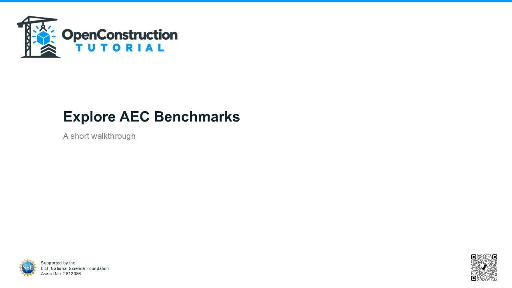
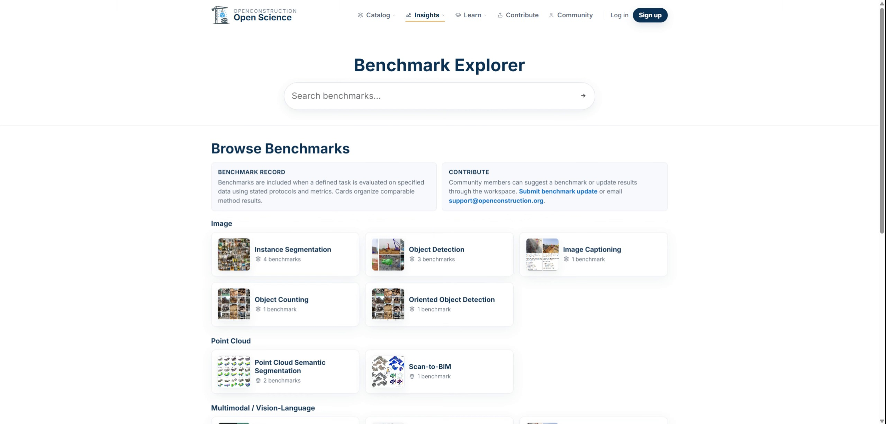
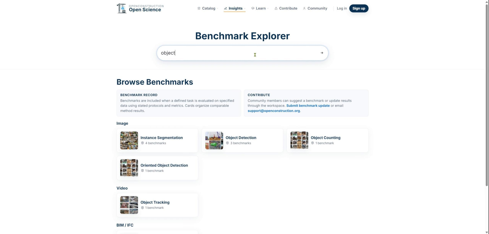
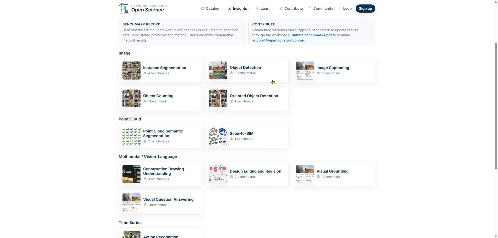
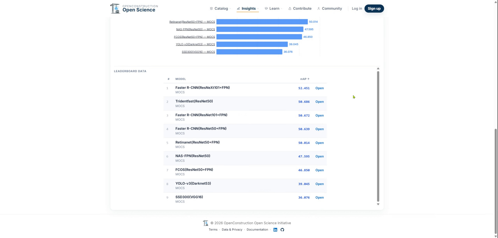
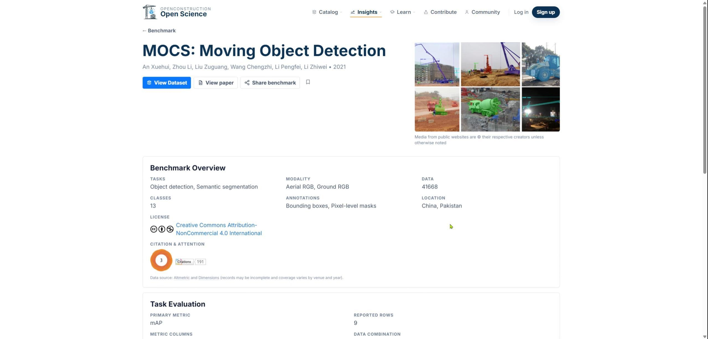
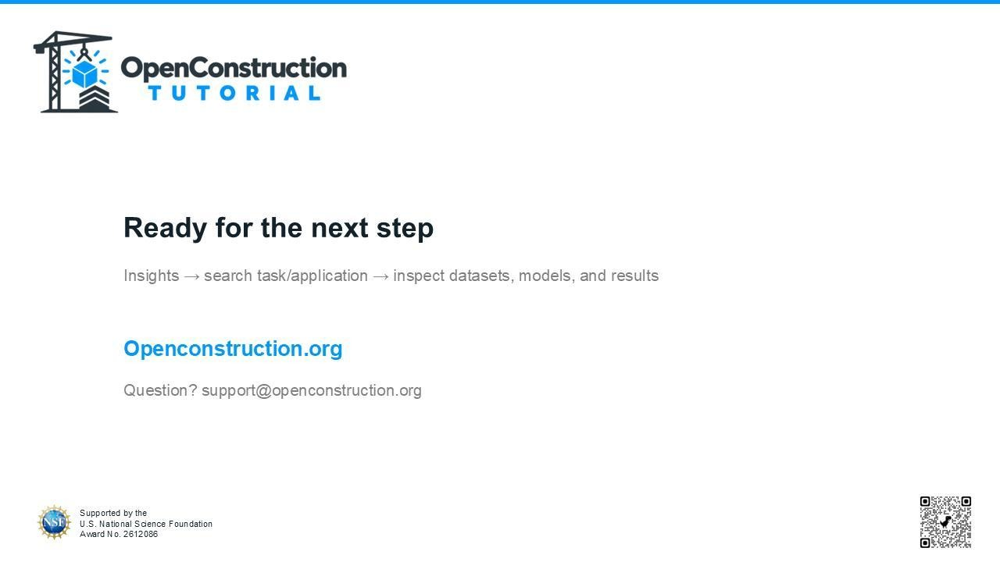

Welcome to the Benchmark Tutorial
OpenConstruction benchmarks organize evaluation evidence for architecture, engineering, and construction tasks. This guide explains how to explore benchmark tasks and interpret reported results responsibly.

Open the Benchmark Explorer
Open the public Benchmark Explorer from the Insights area. You can search for benchmark tasks and browse the available task categories.

Search by Task
Enter a task or application in the search field. Task-based search helps you find comparable evidence more efficiently than browsing every reported result at once.

Select a Benchmark Task
Choose a benchmark task from the results. A task page organizes the problem definition, associated datasets, candidate models, evaluation metrics, and reported benchmark results.

Inspect the Reported Evidence
Review the evidence before interpreting the numbers. Confirm which dataset was used, which model was evaluated, which metric was reported, and where the result originated.

Interpret Scores in Context
A model score is meaningful only when its task, dataset, data split, metric, and source are understood. Open the benchmark record and, when available, follow its dataset and paper links to verify the underlying evidence.

Use Benchmarks for Decision-Making
Benchmarks provide evidence for decision-making, not automatic endorsements. Use them to identify promising methods, evidence gaps, and useful next experiments.

You are now ready to search benchmark tasks, inspect their evidence, and interpret reported results in context.